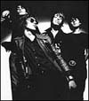
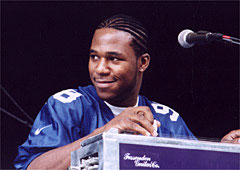
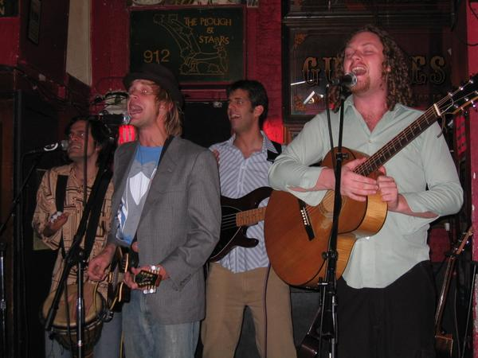
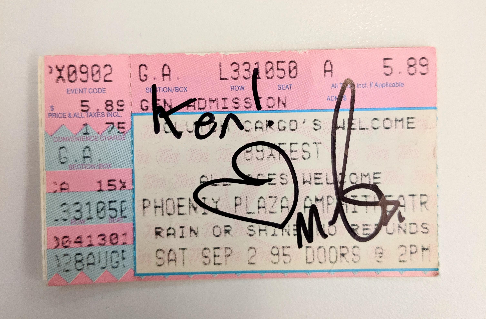

Concert Attendence
Well, "pop" concerts, at least. I've been to lots of classical concerts but other than big-city-symphonies, listing them seems like overkill. Also, this list is grouped (roughly) by band and unsorted. Maybe I'll put it in a database one day.Barenaked Ladies
- 7/26/95 - Kalamazoo, MI. Kalamazoo State Theater. wsg The Waltons
- 6/1/96 - Harmony House in-store, Farmington Hills, MI (Ed and Steve)
- 12/28/95 - Fox Theater wsg Jill Sobule (Won tickets from 89X radio)
- 6/1/96 - Pine Knob Music Theater, MI wsg Sandbox (Thanks to Paul Gaba for front-row tickets!)
- 10/14/96, Eastern Michigan University wsg Geggy Tah (review)
- 5/27/97 - Orbit Room, Grand Rapids, MI wsg Domestic Problems (Thanks to Josh Lutz)
- 8/22/99, Rose Garden Stadium, Portland, OR wsg Semisonic
Sloan
- 06/21/96 Phoenix Plaza, Pontiac, MI (89X fest /w Jale & GVSB, etc.) X-Fest
- 05/29/97 Farmington Hills, MI Harmony House in-store promoting One Chord...
- 09/12/97 Detroit, MI St. Andrews Hall (w/ Johan?? and Thrush Hermit)
- 9/15/98? Pontiac MI Clutch Cargo Pontiac promoting (or prior to?) Live at the Palais
- 10/29/99 Pontiac, MI @ Clutch Cargo with Blinker the Star Pontiac promoting Between the Bridges
- 11/20/01 Cambridge, MA @ Middleeast w/ Ultimate Fakebook
- 6/15/05 Cambridge, MA @ TT The Bears promoting A Sides Win
- 6/18/08 Cambridge, MA @ TT The Bears promoting Parallel Play
- 6/28/11 Cambridge, MA @ TT The Bears promoting The Double Cross
- 5/7/18 Allston, MA @ Brighton Music Hall promoting 12
- 2/19/2020 Boston, MA @ Paradise Rock Club -- An Evening With: Sloan
- 2/4/2022 Alive & Alright - Between The Bridges Live (streaming, bootleg)
Moxy Fruvous
- 4/22/97 Ark, Ann Arbor, Michigan. Review
- 11/5/97 Ark, Ann Arbor, Michigan. wsg The Paperboys. Review
- 6/10/98 Ark, Ann Arbor, Michigan.. Review (in support of Live Noise)
- 8/7/98 Mel Lastman Square, Toronto, Ontario. Review
- 8/9/98 Taste of the Danforth, Toronto, Ontario. Review
- 6/2/99 Aladdin Theater, Portland, Oregon. My review. (the dangerous photo)
- 9/17/99 Magic Bag, Ferndale, Michigan. Review
- 2/15/00 Michigan Theater, Ann Arbor, Michigan. Review
Cibo Matto

{kind=link}
{kind=link}
{kind=link}
G Love and Special Sauce
- Summer 1999, Portland, OR
- 8/8/97 Majestic Theater, Ferndale wsg Ben Lee
Ben Lee
- 6/21/97 Magic Stick, Ferndale (I sat behind Claire Daines)
- 6/22/01 TT The Bear's, Cambridge, MA.
Chemical Brothers
Summer 1999, Portland, ORBritney Spears wsg Step and Michael Fredo
Summer 1999, Hillsboro, ORBoston Pops wsg Cindi Lauper, Arlo Guthrie, et al
7.4.01, Boston, MAKristin Hersh
7.13.01, Brookline, MA (wsg Damon and Naomi) 4.20.07, Northampton, MABright Eyes (Conor Oberst solo)
7.14.01, Brookline, MARobert Randolph and the Family Band
 09-22-01, Bill's Bar, Boston, MARoyal Crown Review
Spring 1999, Cleveland, OHProject Logic
Fall 2000, Somerville, MABlue Rodeo
Cleveland, OHBlue Rodeo, Great Big Sea, 5440, Weeping Tile, Waltons
7/98 Stardust Picnic, Jetform Park, Ottawa.Blue Rodeo, Great Big Sea, Neko Case and Her Boyfriends, Guster
7/1/99 Stardust Picnic, Vancouver, British Columbia (the encore.... Wow.){kind=link}
Great Big Sea
- Fall 1998, Ark, Ann Arbor, MI
- 7.24.01, WTC, New York, NY
- 3.9.02, Boston MA wsg Carbon Leaf
- 4.12.07, Boston, MA @ Orpheum
23rd Annual Ann Arbor Folk Festival, 2000
featuring Shawn Colvin, Arlo Guthrie and Family, Great Big Sea, Hot Club of Cowtown, et alAnn Arbor, MI
Spirit of the West
- Winter 1996? 7th House, Pontiac, MI
- 7/00 North Vancouver, BC
Nields
Summer 1998, Toronto, OntThe Bobs
- ???, 7th House, Pontiac, MI
- 4/27/01, Somerville Theater, Somerville, MA
- 3/29/03, Somerville Theater, Somerville, MA
Carbon Leaf
- 4/3/03, Middle East Club, Cambridge, MA
- 7/17/03, Copley Sq. Park, Boston, MA
- 9/23/04, Harpers Ferry, Allston, MA
- 8/11/05, Copley Sq. Park, Boston, MA
- 7/14/07, Boarding House Park, Lowell, MA
- 10/14/09, Somerville Theater, Somerville, MA w/ Stephen Kellogg and the Sixers (terrific!)
- 11/21/2014, Sinclair, Cambridge, MA
- 11/29/2020, (Streaming), A Harvest Homecoming
- 6/26/2022, Lookout Farm, Natick, MA (photos)
- 6/23/2024, Lookout Farm, Natick, MA
Guster
6/24/03, City Hall Plaza, Boston, MA5/26/07, Hatch Shell, Boston, MA (w/ K.T. Tunstall)
Chris and Meredith Thompson
7/30/03, Technology Square Courtyard, Cambridge, MADown the Line
- 11/9/03, Kirkland Cafe, Somerville, MA wsg Jess Tardy and Noam Weinstein
- 4/2/04, Plough and Stars, Cambridge, MA
- 4/30/2005, Alvin's, Detroit, MI w/ Tally Hall
- 5/15/07, Paradise, Boston, MA.
- 4/23/08, Johnny D's, Somerville, MA
- 4/16/10, Johnny D's, Somerville, MA
Derek Fawcett
- 11/5/14, Johnny D's, Somerville, MA opening for Rhett Miller
- 10/8/16, Lilypad, Somerville MA
Rhett Miller
- 11/5/14, Johnny D's, Somerville
- 7/16/16, ONCE Ballroom, Somerville, MA
- 12/15/17, City Winery, Boston, MA
- 9/14/19, City Winery, Boston, MA w/ Dan and the Wildfire
- 3/23/2020, Streaming, Too Far to Care (an early pandemic streaming show).
- 6/10/2024, City Winery, Boston, MA
Tally Hall
12/12/05: Harpers Ferry, Allston, MA4/13/08: Great Scott, Allston, MA
Rush (30th Anniversary Tour)
8/13/04, Mansfield, MATake 6
1/17/00 - Ann Arbor, MI. Hill Aud.Riders in the Sky
(Too Slim, Woody Paul, and Ranger Doug, the Idol of American Youth!)6/12/98 - Ann Arbor, MI. The Ark.
Indigo Girls
6/14/97 - Pine Knob, MI.I just remembered I used to go to Phoenix Plaza Ampitheater shows...
KMFDM
5/26/95 - Pontiac, MI. Phoenix Plaza Ampitheater (My first concert ever?)Lords of Acid + My Life w/ the Thrill Kill Kult
7/29/95 - Pontiac, MI. Phoenix Plaza AmpitheaterMoby
9/2/95 - Pontiac, MI. Phoenix Plaza Ampitheater (89X Fest).Retroactive autograph from when I met him in 2019:
